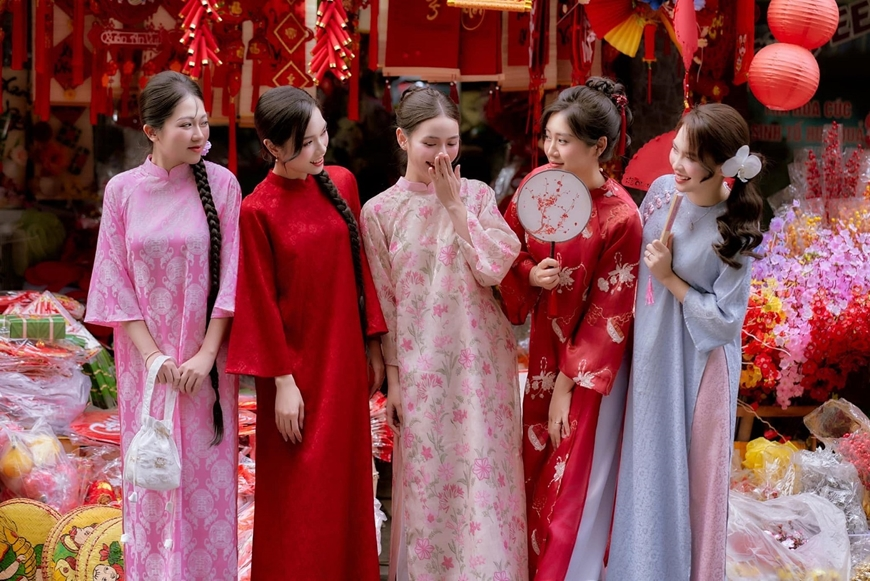
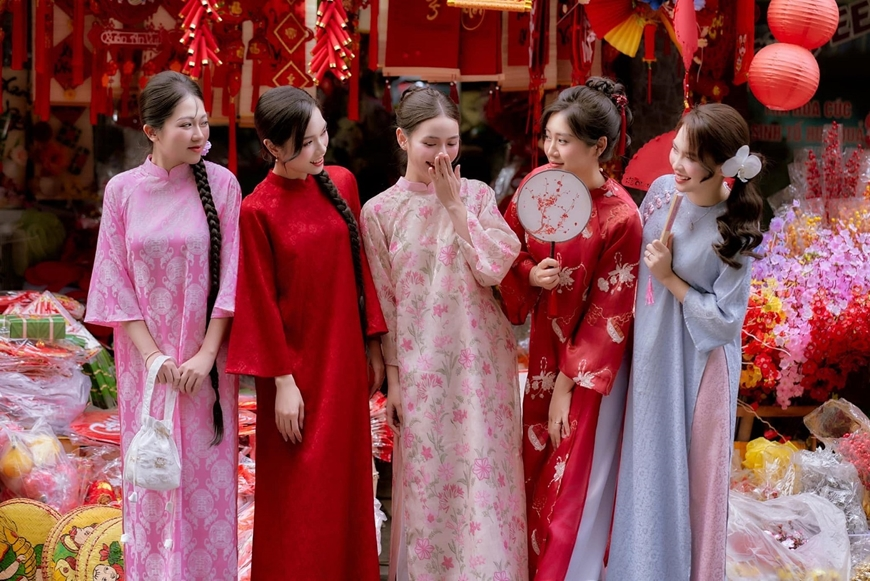

🧧 Tết Bính Ngọ

Tết là dịp sum họp gia đình, gói bánh chưng, chúc Tết và giữ gìn truyền thống, mang đến không khí ấm áp và thiêng liêng trong mỗi mái nhà Việt. Đây là thời điểm mọi người tạm gác lại những lo toan của cuộc sống để quây quần bên nhau, chia sẻ niềm vui, gửi trao những lời chúc tốt đẹp và cầu mong một năm mới bình an, hạnh phúc, học tập tiến bộ và thành công trong mọi việc. Tết không chỉ là khoảnh khắc chuyển giao của đất trời mà còn là điểm tựa tinh thần của mỗi con người, nơi quá khứ, hiện tại và tương lai gặp nhau trong hương trầm ấm áp và sắc xuân rực rỡ. Tết gợi nhắc chúng ta nhớ về cội nguồn, về đạo lý “uống nước nhớ nguồn”, về tình cảm gia đình thiêng liêng không gì thay thế được. Như một bản nhạc dịu dàng của mùa xuân, Tết đánh thức trong lòng người niềm tin, hy vọng và khát vọng vươn lên, để mỗi bước đi trong năm mới đều vững vàng, tươi sáng và tràn đầy yêu thương.
 

| Thời gian | Hoạt động | Ý nghĩa |
|---|---|---|
| Giao thừa | Đón năm mới |
Khởi đầu may mắn |
| Mùng 1 | Chúc Tết gia đình |
Gắn kết yêu thương |
| Mùng 2 | Thăm họ hàng |
Tình thân bền chặt |
| Mùng 3 | Du xuân |
Thư giãn, vui vẻ |
| Mùng 4 | Khai xuân |
Khởi sự hanh thông |
| Mùng 5 | Học tập – làm việc |
Năm mới thành công |